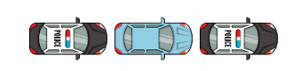

╔════≫──────๑ Kompendium Wiedzy LSPD ๑──────≪════╗
║───────────────────────────────────────────────────────────────────────────────────────────────────║╭━━━ Pit ━━━╮
➔ Manewr Kleszcze
Manewr kleszcze
Manewr kleszcze - Jest to manewr, który jak sama nazwa wskazuje, przy pomocy funkcjonariuszy zakleszcze podejrzanego.
Wykonuje się go najczęściej: Unit 1 ustawia się przed maską podejrzanego, a Unit 2 za bezpośrednio stykając się ze zderzakiem. PS. manewr kleszcze można wykonać z otoczeniem
